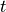
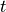

Tutorial¶
This tutorial shows some basic examples on how to import and use PyMaxflow. It is aimed to people who are already familiar with the maxflow problem and its applications in computer vision and image processing, and want to learn the basic usage of PyMaxflow. This is not, in any case, a tutorial on graph-cuts.
Getting started¶
Install PyMaxflow using pip:
pip install PyMaxflow
Once installed, import it as usual:
import maxflow
# Print the version
print(maxflow.__version__)
A flow network with two nodes¶
This example builds a simple flow network and finds its maximum flow.

This network has two terminal nodes, the source  and the sink
, and two non-terminal nodes, labeled 0 and 1. In PyMaxflow,
terminal nodes and are always implicitly present in the
network, and it is not necessary (or even possible) to declare them explicitly.
In addition, terminal edges (connecting non-terminal nodes with terminal nodes),
and non-terminal edges (connecting non-terminal nodes), are treated differently.
and the sink
, and two non-terminal nodes, labeled 0 and 1. In PyMaxflow,
terminal nodes and are always implicitly present in the
network, and it is not necessary (or even possible) to declare them explicitly.
In addition, terminal edges (connecting non-terminal nodes with terminal nodes),
and non-terminal edges (connecting non-terminal nodes), are treated differently.
The following code uses the standard single-edge methods of PyMaxflow to build this simple network. Note that these methods might be slow in practice for networks with many nodes and edges:
import maxflow
# Create a graph with integer capacities, with 2 non-terminal nodes and 2 non-terminal edges.
# Note that these numbers are just indicative (read below)
g = maxflow.Graph[int](2, 2)
# Add two (non-terminal) nodes. Get the index to the first one.
nodes = g.add_nodes(2)
# Create the non-terminal edges (forwards and backwards) with the given capacities between nodes 0 and 1.
g.add_edge(nodes[0], nodes[1], 1, 2)
# Set the capacities of the terminal edges...
# ...for the first node
g.add_tedge(nodes[0], 2, 5)
# ...for the second node
g.add_tedge(nodes[1], 9, 4)
The non-terminal edges are created with add_edge. The terminal edges are
created with add_tedge.
The type of the capacities can be int, as in the example, or float. In that case, the graph declaration would be:
g = maxflow.Graph[float](2, 2)
The constructor parameters (2, 2) are initial estimations of the number of
nodes and the number of non-terminal edges. These estimations do not need to be
correct or even approximate (it is possible to set them to 0), but a good
estimation allows for more efficient memory management. Consult the
documentation of the constructor for more details. In this specific example, the
number of nodes and non-terminal edges was known in advance.
Now we can find the maximum flow in the graph:
flow = g.maxflow()
print(f"Maximum flow: {flow}")
Finally, we want to know the the partition given by the minimum cut:
print(f"Segment of the node 0: {g.get_segment(nodes[0])}")
print(f"Segment of the node 1: {g.get_segment(nodes[1])}")
The method get_segment returns 0 when the given node belongs to the
source partition and 1 when the node belongs to the sink partition.
This example is available in examples/simple.py. Running the code will
print:
Maximum flow: 8
Segment of the node 0: 1
Segment of the node 1: 0
This means that the minimum cut cuts the graph in this way:

The severed edges are marked with dashed lines. Indeed, the sum of the capacities of these edges is equal to the maximum flow 8.
Binary image restoration¶
This example shows how to build a 4-connected grid layout of non-terminal nodes using the advanced multi-edge functions of PyMaxflow. While this example focuses on a relatively simple 4-connected grid, these multi-edge functions are flexible to create very complex networks involving many nodes and edges with a few calls. More details are given in the following section.
We will use the 4-connected grid network to remove Gaussian noise from a binary image. The original, noise-free image is

The noisy version was obtained adding strong Gaussian noise to the original image:

We will restore the image minimizing the energy
are the values of the restored image,  is the number of pixels. The unary term (resp. )
is the penalty for assigning the value 0 (resp. 1) to the i-th pixel. Each
depends on the values of the noisy image, which are denoted as
is the number of pixels. The unary term (resp. )
is the penalty for assigning the value 0 (resp. 1) to the i-th pixel. Each
depends on the values of the noisy image, which are denoted as
 :
:
Thus, is low when assigning the label 0 to dark pixels or the label
1 to bright pixels, and high otherwise. The value  is the
regularization strength. The larger the smoother the restoration. We
arbitrarily fix it to 50.
is the
regularization strength. The larger the smoother the restoration. We
arbitrarily fix it to 50.
The maximum flow algorithm is widely used to minimize energy functions of this
type. We build a network to represent the above energy. This network has a
non-terminal node per image pixel, and the nodes are connected in a 4-connected
grid arrangement. The capacities of all non-terminal edges is . The
capacities of the edges from the source node are set to , and the
capacities of the edges to the sink node are .
Note
It could be possible to build this network as we did in the first example. First, add all the nodes with
add_nodes. Then, iterate over the nodes adding the non-terminal edges withadd_edge, and finally add the capacities of the terminal edges callingadd_tedgeonce per pixel. While this approach is feasible, it is very slow in Python, especially when dealing with large images or stacks of images.
PyMaxflow provides methods for building complex networks with a few calls. The
method add_grid_nodes adds multiple nodes and returns their indices in a
convenient n-dimensional array with the given shape; add_grid_edges adds
edges to the grid with a given neighborhood structure (4-connected by default);
and add_grid_tedges sets the capacities of the terminal edges for multiple
nodes:
# Create the graph.
g = maxflow.Graph[int]()
# Add the nodes. nodeids has the identifiers of the nodes in the grid.
# Note that nodeids.shape == img.shape
nodeids = g.add_grid_nodes(img.shape)
# Add non-terminal edges with the same capacity.
g.add_grid_edges(nodeids, 50)
# Add the terminal edges. The image pixels are the capacities
# of the edges from the source node. The inverted image pixels
# are the capacities of the edges to the sink node.
g.add_grid_tedges(nodeids, img, 255-img)
Perform the maxflow computation and get the results:
# Find the maximum flow.
g.maxflow()
# Get the segments of the nodes in the grid.
# sgm.shape == nodeids.shape
sgm = g.get_grid_segments(nodeids)
The method get_grid_segments returns an array with the same shape than
nodeids. It is almost equivalent to calling get_segment once for each
node in nodeids, but much faster, and preserving the shape of the input. For
the i-th cell, the array stores False if the i-th node belongs to the source
segment (i.e., the corresponding pixel has the label 1) and True if the node
belongs to the sink segment (i.e., the corresponding pixel has the label 0). We
now get the labels for each pixel:
# The labels should be 1 where sgm is False and 0 otherwise.
img2 = np.int_(np.logical_not(sgm))
# Show the result.
from matplotlib import pyplot as ppl
ppl.imshow(img2)
ppl.show()
The result is:

This is a comparison between the original image (left), the noisy one (center) and the restoration of this example (right):

Complex grids with add_grid_edges¶
The method add_grid_edges is a powerful tool to create complex network
layouts:
{kind=link}
{kind=link}

{kind=link}


{kind=link}
The best way to understand the potential applications of add_grid_edges is
to look at the examples of the PyMaxflow repository.
The file
examples/layout_examples.pyshows a variety of network layouts created withadd_grid_edges.A more advanced example in
examples/layout_example2.pybuilds a complex layout with several calls toadd_grid_edgesandadd_grid_tedges.The file
examples/layout_example3D.pycontains the definition a 3D grid layout.
The documentation
of maxflow.GraphInt.add_grid_edges() also contains a few useful use
cases.